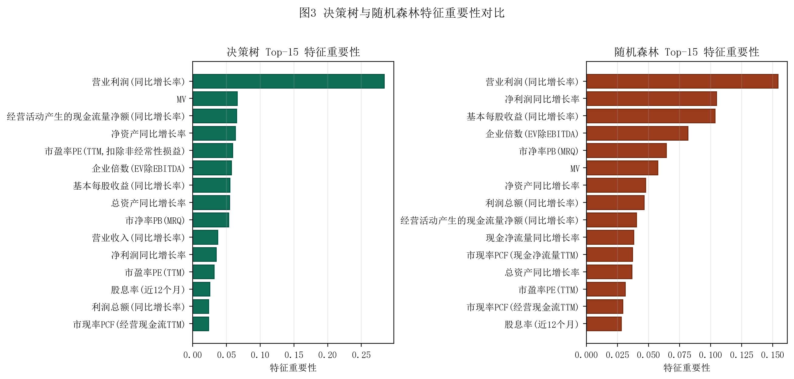
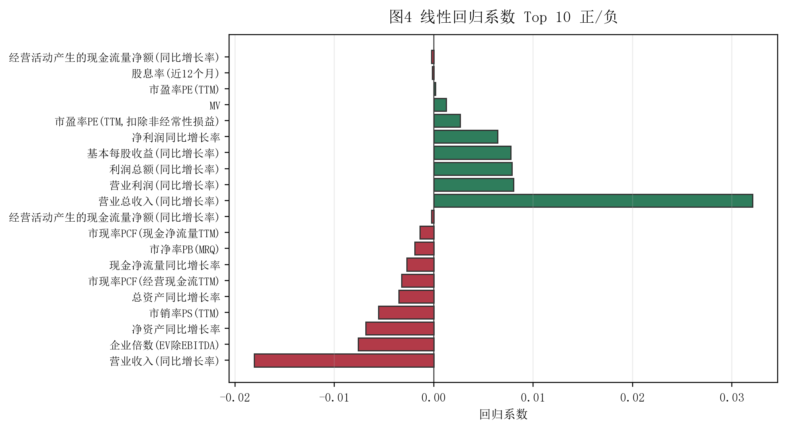

线性回归
以最小二乘法拟合因子与收益的线性关系，作为基线模型；优点是可解释，缺点是无法捕捉非线性。
ML Stock Selection · Quarterly Top 30
用 A 股截面财务因子数据训练四种机器学习模型，预测股票下一季度收益，按预测得分每季度挑选 Top 30 股票构建等权和预测加权组合，对比四模型与市场基准的收益、风险、夏普等指标。
Algorithm Basics
四种机器学习模型各有特点：线性回归给出线性预测基线，逻辑回归输出涨跌概率，决策树捕捉非线性关系，随机森林通过集成提升稳健性；Top 30 选股是典型的"信号→排序→截尾"流程。
以最小二乘法拟合因子与收益的线性关系，作为基线模型；优点是可解释，缺点是无法捕捉非线性。
将 Next_Ret > 0 转为二分类标签，输出正类概率作为排序分数；C=0.01 增强正则化避免过拟合。
CART 算法递归分裂特征空间，max_depth=8 控制复杂度；可输出特征重要性，能捕捉非线性。
100 棵决策树通过自助采样和特征随机集成；RandomizedSearchCV 调 n_estimators / max_depth。
每只股票权重 1/30；简单稳健，无参数；测试期 4 季度共 120 个仓位。
权重正比于模型预测收益；高确信股票分配更多资金；负预测收益 clip 为 0 避免空头。
Model Evaluation
数据集 model_data.csv 共 39,616 条记录、19 个财务因子；按季度划分训练集（2020Q1–2021Q2）与测试集（2021Q3–2022Q2）。下表为四模型在测试集 4 季度的 Top 30 选股回测结果。
8 个模型组合（4 模型 × 2 权重）vs 市场基准，4 个测试季度累计净值走势。
左：累计收益对比；右：夏普比率对比；EW 与 PW 效果接近，EW 略优。
Feature Importance
决策树与随机森林识别出对收益预测最重要的财务因子，线性回归系数反映因子的边际影响方向与强度。

营业利润同比增长率、MV、净利润同比增长率是 Top 3 重要特征

绿色为正向因子（值越大越涨），红色为负向因子
Artifacts
TASK6 独立保存报告、Python 源码、4 张图表、4 个训练好的模型 .pkl 与 5+ 个结果 CSV，网页继续复用共享样式与脚本。
包含任务说明、数据集、模型原理、Top 30 选股逻辑、回测指标、4 张图表、策略优势与局限。
下载 PDF完整 Python 脚本可重新生成所有指标、图表、CSV 和报告；4 个 .pkl 模型可被复用加载。
查看 Python 源码 下载绩效汇总 下载特征重要性